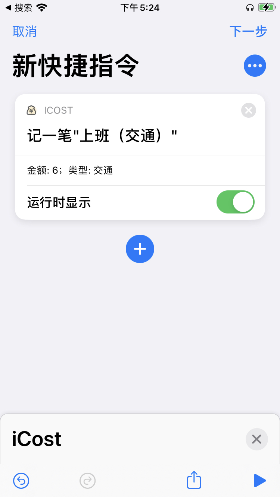

自动化入账（快捷指令）
快捷指令下的周期入帐，可以实现非常复杂的场景交互和触发机制。可以直接参考用快捷指令实现自动记账的一天。而针对所需要的场景比较简单的，可以直接使用应用内嵌的周期入账（应用内部）功能。
1. 使用模板配置快捷指令动作
自动入账功能依附在模板功能下，用户可以在应用内部创建一个模板，创建完成之后系统会自动将该模板注册为一个 shortcut 的 action。这意味着，可以在系统的快捷指令 app 中找到该模板操作，并为该操作创建一条快捷指令。
当应用内部配置完模板之后，等待一小段时间，就会在系统的快捷指令 app 中看到对应的 action 出现。

2. 创建自定义自动化
创建一个自动化的过程可以参考下面的这个动图，事实上，系统提供了很多配置选项，允许各种繁复的前置条件，可以了解一下。